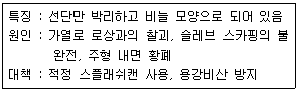
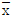
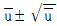
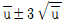
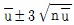
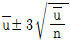

압연기능장 (2010-03-28 기출문제)
1과목: 임의 구분
1. 두께 200mm, 폭 1800mm, 길이 3000mm의 슬래브를 두께 5mm, 폭 1800mm의 열연 코일로 생산할 경우 코일의 길이는 몇 m인가?
- 100
- 120
- 140
- 180
(정답률: 76%)

2. 냉간압연기에서 롤 몸체의 지름을 적게 하는 것이 유리한데 그 이유로 가장 적합한 것은?
- 재료의 열 변형 때문이다.
- 변형 저항이 매우 크고 롤 편평화 심하기 때문이다.
- 받침 롤의 접촉을 고려하기 때문이다.
- 주형슬래브의 대형화에 따라 물림각도가 크기 때문이다.
(정답률: 89%)
3. 가열로에서 폐가스를 이용하여 연소공기를 예열하는 설비는?
- Skid Rail
- Generator
- Burner
- 공기 Recuperator
(정답률: 90%)
4. 전기 청정 작업 중 그리드(Grid)와 응액사이에 먼지나 기체가 부착되어 청정력이 떨어졌을 때 가장 최우선 조치방법은?
- 절연유를 삽입한다.
- 주파수를 변환시킨다.
- 극성을 바꾸어 준다.
- 그리드의 전극을 활성화시킨다.
(정답률: 87%)
5. 가열로에서 가열온도가 너무 낮으면 나타나는 현상으로 옳은 것은?
- 압하력의 증대
- 결정립의 조대화
- 스케일로스의 증대
- 탈탄의 증대
(정답률: 69%)
6. 압연(Rolling) 가공에 대한 설명으로 틀린 것은?
- 치수 정도의 제어가 어렵다.
- 열간압연과 냉간압연으로 구분한다.
- 연속생산이 가능하여 생산속도가 높다.
- 두 개의 회전하는 롤 사이에 소재를 통과시켜 성형하는 방법이다.
(정답률: 96%)
7. 롤의 주속도가 20m/s, 출측의 재료 속도가 26m/s 일 때의 선진율은 몇 %인가?
- 10%
- 20%
- 30%
- 40%
(정답률: 79%)
8. 가공용 Mg 합금으로 상태도 651℃ 부근에서 포정반응을 하며 용접성, 고온성형성이 우수하고, 내식성도 비교적 양호한 합금계는?
- Mg-Mn계 합금
- Mg-Zn계 합금
- Mg-Zr계 합금
- Mg-회토류계 합금
(정답률: 69%)
9. 압연시 압연재를 올리고 내리는 장치는?
- 롤 스탠드(roll stand)
- 쏘오 테이블(saw table)
- 틸팅 테이블(tilting tabel)
- 리드 스핀들(lead spindle)
(정답률: 88%)
10. 중후판 소재 압연 중에 소재 온도를 조정하여 최종 패스의 온도를 낮게 하면 제품의 조직이 미세화하여 강도의 상승과 인성이 개선되는 압연작업은?
- 폭내기 압연
- 완성 압연
- 콘트롤드 롤링(controlled rolling)
- 크로스 롤링(cross rolling)
(정답률: 83%)
11. 압연유의 특성 중 산가의 정의로 옳은 것은?
- 시료 1g 중에 존재하는 유리지방산을 중화하는데 소요되는 KOH의 mg수
- 시료 1g 중에 함유된 전알칼리성분을 중화하는데 소요되는 산과 당량의 KOH mg수
- 일정용량의 액체가 규정조건하에서 점도계의 모관을 유출하는 시간
- 산가 및 알칼리가의 총칭
(정답률: 71%)
12. 사상압연작업에서 롤단위 편성 기본원칙 중 정기수리 기간 전ㆍ후의 편성원칙에 대한 설명으로 틀린 것은?
- 정기수리 후의 압연은 백업 롤의 워밍업 및 온도확보 등을 고려하여 부하가 적은 후물재를 편성한다.
- 롤 정비능력 등을 고려하여 박물단위는 연속적으로 3단위 투입은 제한한다.
- 백업 롤 마모로 인한 평탄도 불량을 고려하여 계획휴지 직전에는 극박판 및 광폭재를 투입하여야 한다.
- 정기수리 전 및 로내재 단위는 로 수리 보열 및 정수 직후의 압연조건을 고려하여 후물 또는 추출온도가 낮은 단위로 한다.
(정답률: 92%)
13. 스탠드 밀의 경우 Dry 압연을 Wet 압연과 비교하여 설명한 것 중 틀린 것은?
- 방청효과가 없다.
- 표면 결합 관리가 용이하다.
- 형상제어가 용이하다.
- 저연산율 영역에서 용이하다.
(정답률: 68%)
14. 열간압연시 가열로 추출온도가 너무 높을 때 발생하는 문제점이 아닌 것은?
- 연료손실이 많다.
- Scale Loss가 크다.
- 압연온도가 높게 되므로 Rolled in Scale이 발생할 가능성이 크다.
- 압연기에 과부하가 걸려 고장 원인이 된다.
(정답률: 89%)
15. 다음 중 유막베어링의 특징이 아닌 것은?
- 지름을 크게 할 수 있다.
- 마멸 및 재료의 피로가 거의 없기 때문에 베어링의 수명이 길다.
- 부하 용량이 회전 상승과 함께 감소하지 않고 항상 일정하다.
- 오일 미스트의 윤활로 충분하므로 대규모의 윤활 장치가 필요 없다.
(정답률: 83%)
16. 열간압연시 압연재를 가열할 때 발생되는 Skid mark의 영향에 의해 발생하는 판재 내의 두께 편차를 최소로 하기 위한 설비는?
- AGC
- 교정기
- Roll bender
- Roll balance
(정답률: 89%)
17. 주의의 특징 중 여러 종류의 자극을 자각할 때, 소수의 특정한 것에 한하여 선택하는 기능을 무엇이라 하는가?
- 변동성
- 선택성
- 방향성
- 단속성
(정답률: 90%)
18. 헤드필드(hadifield)강에 대한 설명으로 옳은 것은?
- 마텐자이트계 강이다.
- 가공경화성이 없다.
- 파괴에 대하여 낮은 인성을 나타낸다.
- 팽창계수가 작아 열변형을 일으키지 않는다.
(정답률: 44%)
19. 접지의 설비 중 공통접지에 대한 설명으로 틀린 것은?
- 접지선이 짧고, 접지 배선 및 구조가 단순해져 보수점검이 쉽다.
- 여러 접지 전극이 직렬로 연결되므로 합성 저항을 높이기 쉽다.
- 건축의 철골 구조체를 연결하여 접지 성능을 향상 시키고 보조 효과를 높인다.
- 여러 설비가 공통의 접지 전극에 연결되므로 등전위가 구성되어 장비 간의 전위차가 발생하지 않는다.
(정답률: 81%)
20. 다음 중 냉간압연의 제조 공정 순서로 옳은 것은?
- 열연코일→풀림→냉간압연→산세→전해청정→리코일링→조질압연→냉연코일
- 열연코일→풀림→냉간압연→산세→전해청정→조질압연→리코일링→냉연코일
- 열연코일→산세→냉간압연→전해청정→풀림→조질압연→리코일링→냉연코일
- 열연코일→산세→냉간압연→풀림→전해청정→조질압연→리코일링→냉연코일
(정답률: 79%)
2과목: 임의 구분
21. 가열로의 조로시 강편에 발생되는 스케일 발생을 억제하는 방법으로서 적당하지 않은 것은?
- 로내 분위기를 환원성에 가깝게 해준다.
- 중유 온도를 높여주고 우화 상태를 양호하게 한다.
- 로압을 약간 높여 외부로부터의 산소침입을 방지한다.
- 로압을 낮춘 상태에서 로내 분위기를 산화성으로 해준다.
(정답률: 87%)
22. 다음은 어떤 결함의 특징, 원인 그리고 대책을 기술하였다. 어떤 결함인가?

- 귀공
- 스카핑흠
- 스캡
- 펀치흠
(정답률: 93%)
23. 금속 중에 침입형으로 고용하는 원소들로만 이루어진 것은?
- C, H, Gr, Na, N
- H, Ar, Cl, C, Na
- N, Mc, O, G, Gr
- B, O, C, N, H
(정답률: 76%)
24. 다음 중 기체연료(Gaseous fuel)의 특징을 설명한 것으로 틀린 것은?
- 회분이나 매연이 없어 청결하다.
- 연소는 불균일하고, 연소조절이 어렵다.
- 누출되기 쉽고 폭발의 위험성이 크다.
- 연소효율이 높고 소량의 공기로도 완전연소가 가능하다.
(정답률: 83%)
25. 상ㆍ하부 받침 롤의 주변에 각 20~26개의 작은 롤을 배치하여 단단한 재료를 열간 스트립 하는 압연기는?
- 클러스터 압연기
- 데리 압연기
- 유성 압연기
- 열간 조압연기
(정답률: 75%)
26. 다음의 로 중 단식로(Batch type)인 것은?
- 고정식 균열로
- 퓨셔식 가열로
- 위컹빔식 가열로
- 회전로상식 가열로
(정답률: 82%)
27. 다음 중 압력 제어 밸브가 아닌 것은?
- 교축 밸브
- 릴리프 밸브
- 시퀸스 밸브
- 무부하 밸브
(정답률: 76%)
28. 산세공정에서 스트립(Strip)산세 청정에 영향을 주는 요소가 아닌 것은?
- 세척액의 농도
- 세척액의 교반
- 스케일의 비중
- 스케일의 조성 및 두께
(정답률: 70%)
29. 사상압연에서 압연속도와 시간에 대한 설명으로 틀린 것은?
- 가속종료 후 런 아웃 테이블 냉각능력, 압연기 능력, 사상온도 공차 등을 고려한 최대속도로 압연한다.
- 압연 소요 시간이 길어지면 온도가 저하되어 온도 보상을 하여 생산성을 향상시킨다.
- Threading speed는 판선단이 사상 각 스탠드를 통과하여 런 아웃 테이블 상에서 가속이 계시되기까지의 속도를 말한다.
- 사상압연기의 속도 조정은 Mass Flow 법칙에 의해 각 롤 속도의 비율을 다르게 조정한다.
(정답률: 54%)
30. 다음 중 롤 몸체의 절손 원인이 아닌 것은?
- 주물의 불량
- 작업온도 불균일
- 롤 조절 불량
- 재료의 과열
(정답률: 87%)
31. 다음 중 압하율을 크게 하는 방법으로 틀린 것은?
- 지름이 큰 롤을 사용한다.
- 압연재의 온도를 높여준다.
- 롤의 회전 속도를 빨리한다.
- 압연재를 뒤에서 밀어준다.
(정답률: 89%)
32. 신호 처리 방식에 의한 분류 중 프로그램에 의해 미리 정해진 순서대로 제어 신호가 출력되는 제어는?
- 동기 제어계
- 시퀸스 제어
- 비동기 제어계
- 논리 제어계
(정답률: 93%)
33. 가공 경화된 재료를 풀림하면 온도에 따라 여러 가지 변화가 일어난다. 그 순서로 옳은 것은?
- 회복 → 재결정 → 결정립 성장
- 회복 → 결정립 성장 → 재결정
- 재결정 → 결정립 성장 → 회복
- 재결정 → 회복 → 결정립 성장
(정답률: 82%)
34. 안전교육의 방법 중 토의법에 적용되는 경우가 아닌 것은?
- 수업의 중간이나 마지막 단계의 경우
- 시간은 부족한데, 가르칠 내용이 많은 경우
- 팀워크를 필요로 하는 경우
- 알고 있는 지식의 심화 및 어떠한 자료에 대해 보다 명료한 생각을 갖게 하는 경우
(정답률: 85%)
35. 전기아연도금 강판의 특징에 대한 설명으로 틀린 것은?
- 내식성 향상에 이용된다.
- 아연부착량은 용융아연도금 강판의 5배 이상을 할 수 있다.
- 전기도금은 한 면인 편면 도금이 가능하다.
- 상온에 가까운 온도에서 작업하므로 재질특성을 그대로 갖고 도금할 수 있다.
(정답률: 79%)
36. 후판의 일반적인 제조 공정의 순서로 옳은 것은?
- 강편의 가열 → 스케일의 제거 → 압연 → 교정 → 냉각 → 전단
- 강편의 가열 → 압연 → 스케일의 제거 → 교정 → 전단 → 냉각
- 압연 → 스케일의 제거 → 강편의 가열 → 교정 → 냉각 → 전단
- 압연 → 강편의 가열 → 스케일의 제거 → 냉각 → 교정 → 전단
(정답률: 87%)
37. 전자강판(규소강판)에 요구되는 특성이 아닌 것은?
- 투자율 및 포화자속밀도가 낮을 것
- 용접성 등의 가공성이 좋을 것
- 자화에 의한 치수변화가 적을 것
- 사용 중 자기적 성질의 변화가 적을 것
(정답률: 84%)
38. 연속주조법의 특징을 설명한 것 중 틀린 것은?
- 균일한 결정 조직을 얻을 수 있다.
- 느리게 냉각되므로 결합과 편석이 매우 조대화 된다.
- 연속으로 용탕이 보급되므로 파이프의 발생을 막을 수 있다.
- 주형 아래에서 냉각을 조절함으로서 열전달이 이상적으로 이루어져 건전한 강을 생산할 수 있다.
(정답률: 85%)
39. 금속을 용융상태에서 초고속 급랭에 의해 제조되는 재료로 결정이 되어 있지 않은 상태이며, 인장강도와 경도를 크게 개선시킨 합금은?
- 섬유강화합금
- 형상기억합금
- 비정질합금
- 수소저장용합금
(정답률: 76%)
40. 입력되는 복수의 조건을 동시에 충족하였을 때에만 출력(ON)이 나오는 회로는?
- OR회로
- AND회로
- NOR회로
- NOT회로
(정답률: 93%)
3과목: 임의 구분
41. 특수 초경 합금 중에 피복 초경 합금의 특성이 아닌 것은?
- 내마모성이 높다.
- 피삭재와 고온 반응성이 높다.
- 내크레이더(Crater)성과 내신회성이 우수하다.
- 강, 주강, 주철, 비철, 금속의 절삭에 범용으로 사용할 수 있다.
(정답률: 76%)
42. 작동유의 점도가 너무 높은 경우의 영향에 대한 설명이 아닌 것은?
- 작동이 원활하지 못하다.
- 동력소비량이 증가한다.
- 유압계통 내의 압력손실이 증대한다.
- 내ㆍ외부 등으로부터의 누설이 증대한다.
(정답률: 86%)
43. 다음 중 냉간압연에서 디스케일링(Descaling) 능력에 대한 설명으로 틀린 것은?
- 염산이 황산의 1.5배 정도 산세시간이 길다.
- 멸연 권취온도가 높을수록 산세시간이 길어진다.
- 황산의 경우 철분이 증가함에 따라 디스케일링 능력이 증가한다.
- 산세용액의 온도와 농도가 높을수록 산세성은 향상된다.
(정답률: 51%)
44. 냉간압연에서 압연유에 요구되는 성질이 아닌 것은?
- 윤활성이 좋을 것
- 유성 및 유막강도가 작을 것
- 압연재의 탈지성이 좋을 것
- 에멀션화성이 양호할 것
(정답률: 88%)
45. 가열로 중 로상이 가동부와 고정부로 나뉘어 있고, 이동 로상이 유압 또는 전등에 의해 상승→전진→하강→후퇴의 과정을 거치는 구형 운동기구를 이용하여 재료 사이에 임의의 간격을 두고 이송시킬 수 있는 로는?
- 롤식 가열로
- 푸셔식 가열로
- 워킹빔식 가열로
- 회전로상식 가열로
(정답률: 95%)
46. 다음 중 Cu-Be 합금에 대한 설명으로 틀린 것은?
- 내식성, 내피로성, 강도가 우수하다.
- 석출경화에 의해서 높은 경도와 전기전도도를 얻을 수 있다.
- Cu-Be 합금에 포함되어 있는 Co는 결정립성장을 조장하고 Ni는 주로 결정립 조대화에 기여한다.
- 스파크가 일어나지 않고 높은 경도가 요구되는 방폭용 재료에 사용한다.
(정답률: 73%)
47. 공형설계의 원칙을 설명한 것 중 틀린 것은?
- 공형 각부의 강면율을 가급적 균등하게 한다.
- 가급적 직접압하를 피하고, 간접압하를 이용하여 설계하도록 한다.
- 플랜지의 높이를 내고 싶을 때에 초기 공형에 예리한 홀을 넣는다.
- 제품의 모서리 부분을 거칠지 않은 형상으로 마무리 하려면 서로 전후하는 공형의 공형 간극이 계속해서 같은 곳에 오지 않도록 한다.
(정답률: 78%)
48. 다음 중 조질압연의 목적으로 틀린 것은?
- 스트레쳐 스트레인을 방지한다.
- 스트립형상을 교정하여 평활하게 한다.
- 주름모양의 표면결함(Coil Break)을 방지한다.
- 판의 두께를 변호하여 강도를 부여한다.
(정답률: 73%)
49. 전동기의 동력을 상, 하 롤에 각각 분배하여 주는 것은?
- 쵸크
- 피니언
- 스핀들
- 커플링
(정답률: 84%)
50. Fe-C 상태도에서 탄소의 함량이 약 2.1% 이상을 포함한 강을 무엇이라고 하는가?
- 중탄소강
- 순철
- 연강
- 주철
(정답률: 78%)
51. 균열로에서 균열온도에 대한 설명으로 옳은 것은?
- 균열온도는 탄소량의 증가에 따라 낮게 한다.
- 균열온도가 높을 경우 스케일 생성량이 줄어든다.
- 균열온도가 높을 경우 메탈 로스가 감소한다.
- 균열온도가 높을 경우 압연제품의 포면흠이 줄어든다.
(정답률: 72%)
52. 냉간압연시 롤(Roll)의 탄성변형과 강판(Strip)의 소성 변형에 의해 강판의 에지(Edge)부 판 두께가 급격히 감소하는 현상은?
- Edge Up
- Edge Drop
- Side Flat
- Flat Edge
(정답률: 93%)
53. 압연 토크를 계산할 때 롤의 중심에서 압연하중의 중심까지의 거리를 무엇이라 하는가?
- 투영 접촉길이
- 접촉호
- 토크의 각도
- 토크의 암
(정답률: 89%)
54. 열연 박판의 제조과정 중 열연공장에서 직접적인 품질관리와 거리가 먼 것은?
- 성분
- 치수
- 재질
- 외관
(정답률: 75%)
55. 다음 중 통계량의 기호에 속하지 않는 것은?
- σ
- R
- s

(정답률: 68%)
56. 계수 규준형 샘플링 검사의 OC 곡선에서 좋은 로트를 합격시키는 확률을 뜻하는 것은? (단, α 는 제1종과오, β 는 제2종과오이다.)
- α
- β
- 1-α
- 1-β
(정답률: 78%)
57. u 관리도의 관리한계선을 구하는 식으로 옳은 것은?




(정답률: 71%)
58. 예방보전(Preventive Maintenance)의 효과로 보기에 가장 거리가 먼 것은?
- 기계의 수리비용이 감소한다.
- 생산시스템의 신뢰도가 향상된다.
- 고장으로 인한 중단시간이 감소한다.
- 예비기계를 보유해야 할 필요성이 증가한다.
(정답률: 89%)
59. 다음 중 인위적 조절이 필요한 상황에 사용될 수 있는 워크팩터(Work Factor)의 기호가 아닌 것은?
- D
- K
- P
- S
(정답률: 64%)
60. 어떤 회사의 매출액이 80000원, 고정비가 15000원, 변동비가 40000원일 때 손익분기점 매출액은 얼마인가?
- 25000원
- 30000원
- 40000원
- 55000원
(정답률: 61%)
부피 = 두께 × 폭 × 길이
= 0.2m × 1.8m × 3m
= 1.08m³
이 부피를 열연 코일의 부피로 나누면 코일의 길이를 구할 수 있습니다.
코일의 부피 = 두께 × 폭 × 길이
= 0.0⑤m × 1.8m × 코일의 길이
코일의 길이 = 코일의 부피 ÷ (두께 × 폭)
= 1.08m³ ÷ (0.0⑤m × 1.8m)
= 120m
따라서, 정답은 "120"입니다.